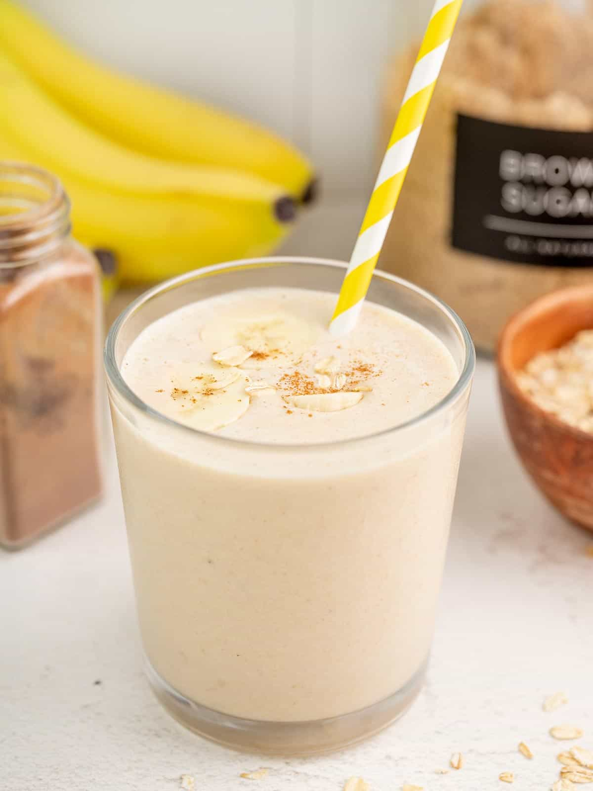

Peanut Butter Banana Smoothie

Description
This peanut butter banana smoothie recipe is great on it's own, but also
makes the perfect base. You can add chia seeds, coconut, oats and more!
It's sweet, creamy and a healthy snack!
Ingredients
- 1 frozen banana
- 2 Tbsp peanut butter
- 1 tsp brown sugar
- 1/4 tsp vanilla extract
- 1 cup milk
Steps
-
Add the sliced banana, peanut butter, brown sugar, vanilla extract, and milk to a blender.
-
Blend the ingredients until smooth. If the smoothie is too thick, add more milk.
If the smoothie is too thin, add more frozen banana. Taste and adjust the sweetness to your liking.